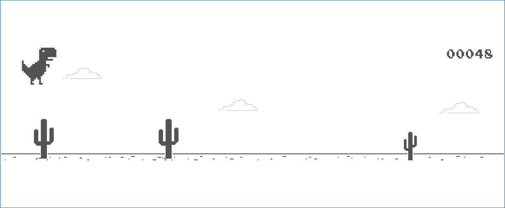

Google恐竜ゲーム

Chrome 恐竜ゲームの紹介 🦖
Googleの「恐竜ゲーム（Dinosaur Game）」は、インターネット接続がない時に表示されるオフラインミニゲームで、ピクセルアートで描かれたかわいらしい恐竜が登場するアクションゲームです。このゲームはシンプルながら非常に中毒性が高く、世界中のユーザーに愛されています。プレイヤーは小さなティラノサウルスを操作し、サボテンや翼竜などの障害物を避けながら、できるだけ長く走り続けることが目標です。ゲームが進むにつれてスピードが増し、より高度な反射神経と集中力が求められます。
また、ゲーム内でのスコアを更新することで、より高い難易度のチャレンジに挑戦でき、友達との競争や自己ベストの更新も楽しみの一つです。このゲームは、Google Chromeだけでなく、あらゆるブラウザでもオンラインで遊べるバージョンが提供されています。
ゲームの特徴
- インターネット接続なしでもプレイ可能なオフラインモード
- かわいらしいピクセルアートスタイル
- シンプルで直感的な操作方法
- ゲーム進行に応じて加速する難易度
- ハイスコアを目指して無限に遊べるゲームプレイ
恐竜ゲームスクリーンショット
恐竜ゲームの操作方法
- スペースキーまたは上矢印キーでジャンプ
- 下矢印キーでしゃがむ（翼竜が現れた時に使用）
- 障害物を避けながらできるだけ長く走り続け、ハイスコアを目指しましょう
ゲームのヒント
スピードが速くなるにつれて反応速度が求められるため、タイミングをしっかり掴むことが大切です。また、翼竜が現れるときは下矢印キーを使ってしゃがみながら避けると安全です。進むにつれて障害物が増え、より困難になりますが、それに伴い達成感も大きくなります。
オフラインでも遊べる！
インターネット接続がなくても、Google Chromeでオフラインモードに切り替えるだけで「恐竜ゲーム」を楽しむことができます。オフライン中に暇な時間があれば、ぜひチャレンジしてみてください！